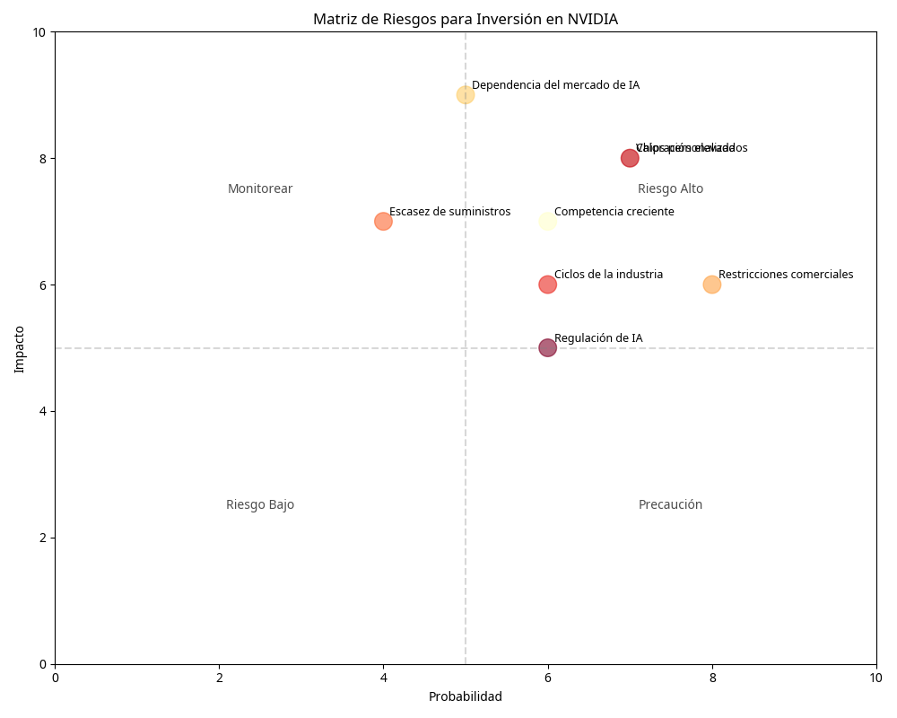
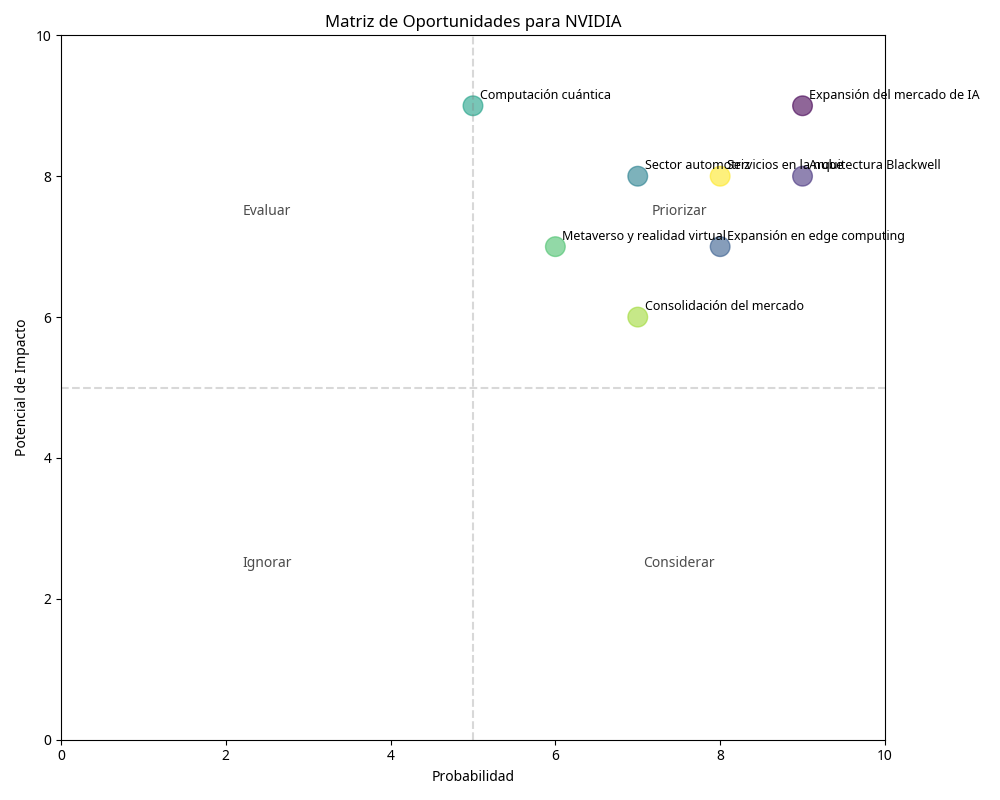

Resumen Ejecutivo
Este análisis evalúa los principales riesgos y oportunidades asociados con una inversión en NVIDIA Corporation. La evaluación se basa en el análisis técnico, fundamental y de la industria realizado previamente, y tiene como objetivo proporcionar una visión equilibrada para la toma de decisiones de inversión.
Evaluación de Riesgo-Recompensa
Alto Riesgo
Baja Recompensa
Riesgo Moderado
Recompensa Moderada
Bajo Riesgo
Alta Recompensa
Considerando tanto los riesgos como las oportunidades identificadas, la relación riesgo-recompensa para una inversión en NVIDIA puede evaluarse como favorable para inversores con horizonte a largo plazo y tolerancia a la volatilidad.
Análisis de Riesgos
Matriz de Riesgos
La matriz de riesgos evalúa los principales factores de riesgo para una inversión en NVIDIA según su impacto potencial y probabilidad de ocurrencia.
Competencia creciente
Descripción: Aumento de la competencia de AMD, Intel y startups de IA.
Impacto: 7/10
Probabilidad: 6/10
Estrategia de mitigación: NVIDIA mantiene ventaja tecnológica y ecosistema CUDA.
Valoración elevada
Descripción: Múltiplos de valoración muy por encima de la media histórica y del sector.
Impacto: 8/10
Probabilidad: 7/10
Estrategia de mitigación: Crecimiento acelerado podría justificar valoraciones altas.
Dependencia del mercado de IA
Descripción: Alta exposición al crecimiento del mercado de IA generativa.
Impacto: 9/10
Probabilidad: 5/10
Estrategia de mitigación: Diversificación hacia otros mercados como automoción y edge computing.
Restricciones comerciales
Descripción: Impacto de restricciones a la exportación de chips avanzados a China.
Impacto: 6/10
Probabilidad: 8/10
Estrategia de mitigación: Expansión en otros mercados geográficos y adaptación de productos.
Evaluación General de Riesgos
El análisis de la matriz de riesgos muestra que los riesgos más significativos para una inversión en NVIDIA son:
- Dependencia del mercado de IA: El crecimiento de NVIDIA está fuertemente vinculado a la expansión del mercado de IA generativa. Cualquier desaceleración en la adopción de IA o en las inversiones en infraestructura de IA podría afectar negativamente a la empresa.
- Valoración elevada: Las acciones de NVIDIA cotizan con múltiplos significativamente superiores a la media histórica y del sector, lo que podría limitar el potencial de revalorización y aumentar la volatilidad.
- Competencia de chips personalizados: Grandes empresas tecnológicas como Google, Microsoft y Amazon están desarrollando sus propios chips de IA, lo que podría reducir su dependencia de NVIDIA a largo plazo.
- Restricciones comerciales: Las tensiones geopolíticas y las restricciones a la exportación de tecnología avanzada a China representan un riesgo para el acceso de NVIDIA a uno de los mercados más grandes del mundo.
Estos riesgos deben ser considerados cuidadosamente, especialmente por inversores con baja tolerancia al riesgo o horizontes de inversión a corto plazo.
Análisis de Oportunidades
Matriz de Oportunidades
La matriz de oportunidades evalúa las principales oportunidades para NVIDIA según su potencial de impacto y probabilidad de materialización.
Expansión del mercado de IA
Descripción: Crecimiento acelerado de la demanda de infraestructura para IA generativa.
Potencial: 9/10
Probabilidad: 9/10
Estrategia de aprovechamiento: Continuar innovando en arquitecturas de GPU optimizadas para IA.
Arquitectura Blackwell
Descripción: Nueva generación de GPUs con mayor rendimiento y eficiencia energética.
Potencial: 8/10
Probabilidad: 9/10
Estrategia de aprovechamiento: Capitalizar la ventaja tecnológica sobre competidores.
Expansión en edge computing
Descripción: Crecimiento del mercado de IA en dispositivos edge y IoT.
Potencial: 7/10
Probabilidad: 8/10
Estrategia de aprovechamiento: Desarrollar soluciones específicas para computación en el borde.
Sector automotriz
Descripción: Aumento de la demanda de chips para vehículos autónomos y ADAS.
Potencial: 8/10
Probabilidad: 7/10
Estrategia de aprovechamiento: Fortalecer alianzas con fabricantes de automóviles.
Evaluación General de Oportunidades
El análisis de la matriz de oportunidades muestra que las oportunidades más prometedoras para NVIDIA son:
- Expansión del mercado de IA: El mercado de chips para IA se espera que crezca a más de $150 mil millones en 2025, representando más del 20% del mercado total de semiconductores. NVIDIA está excepcionalmente bien posicionada para capitalizar este crecimiento.
- Arquitectura Blackwell: La nueva generación de GPUs de NVIDIA ofrece mejoras significativas en rendimiento y eficiencia energética, fortaleciendo su ventaja competitiva en el mercado de IA.
- Servicios en la nube: La creciente demanda de servicios de IA en la nube representa una oportunidad significativa para NVIDIA, tanto a través de ventas directas de hardware como de posibles expansiones en servicios.
- Expansión en edge computing: A medida que la IA se mueve hacia dispositivos edge, NVIDIA tiene la oportunidad de expandir su presencia en este mercado emergente.
Estas oportunidades ofrecen un potencial de crecimiento significativo para NVIDIA en los próximos años, respaldando la tesis de inversión a largo plazo.
Análisis DAFO (SWOT)
Fortalezas
- Liderazgo indiscutible en GPUs para IA y computación de alto rendimiento
- Ecosistema CUDA que crea altos costos de cambio para los desarrolladores
- Márgenes de beneficio superiores a la media del sector
- Posición financiera sólida con efectivo neto positivo
- Fuerte capacidad de innovación y anticipación a tendencias tecnológicas
Debilidades
- Valoración bursátil exigente con múltiplos elevados
- Alta dependencia del crecimiento continuo del mercado de IA
- Exposición a restricciones comerciales y tensiones geopolíticas
- Dependencia de TSMC para la fabricación de chips
- Competencia creciente de AMD, Intel y chips personalizados
Oportunidades
- Crecimiento acelerado del mercado de infraestructura para IA
- Expansión en mercados emergentes como edge computing e IoT
- Creciente demanda en el sector automotriz para vehículos autónomos
- Desarrollo de aplicaciones de metaverso y realidad virtual
- Expansión de servicios en la nube basados en hardware NVIDIA
Amenazas
- Desarrollo de chips de IA personalizados por grandes empresas tecnológicas
- Avances tecnológicos de competidores como AMD e Intel
- Ciclicidad inherente a la industria de semiconductores
- Posibles regulaciones restrictivas en el desarrollo y uso de IA
- Tensiones geopolíticas que afectan a cadenas de suministro globales
Conclusiones y Recomendaciones
Para Inversores a Largo Plazo
NVIDIA presenta una oportunidad de inversión atractiva para inversores con horizonte a largo plazo (3-5 años o más) y tolerancia a la volatilidad. La empresa está excepcionalmente bien posicionada para beneficiarse de tendencias tecnológicas a largo plazo, particularmente la adopción generalizada de IA en empresas y la creciente demanda de computación de alto rendimiento.
Para Inversores a Corto/Medio Plazo
Los inversores con horizontes más cortos deben ser cautelosos debido a la valoración elevada y la posibilidad de volatilidad a corto plazo. Considerar estrategias de entrada escalonadas para mitigar el riesgo de timing.
Estrategias de Mitigación de Riesgos
- Diversificación: Limitar la exposición a NVIDIA a un porcentaje apropiado de la cartera total.
- Entrada escalonada: Considerar la compra de acciones en múltiples puntos para promediar el precio de entrada.
- Horizonte a largo plazo: Adoptar una perspectiva de inversión a largo plazo para superar la volatilidad a corto plazo.
- Seguimiento continuo: Monitorear regularmente los desarrollos en el mercado de IA y la posición competitiva de NVIDIA.
Factores a Vigilar
- Evolución de la demanda de infraestructura para IA generativa
- Avances de competidores en tecnología de chips para IA
- Desarrollo de chips personalizados por grandes empresas tecnológicas
- Cambios en restricciones comerciales y regulaciones de IA
- Capacidad de NVIDIA para mantener sus márgenes y cuota de mercado